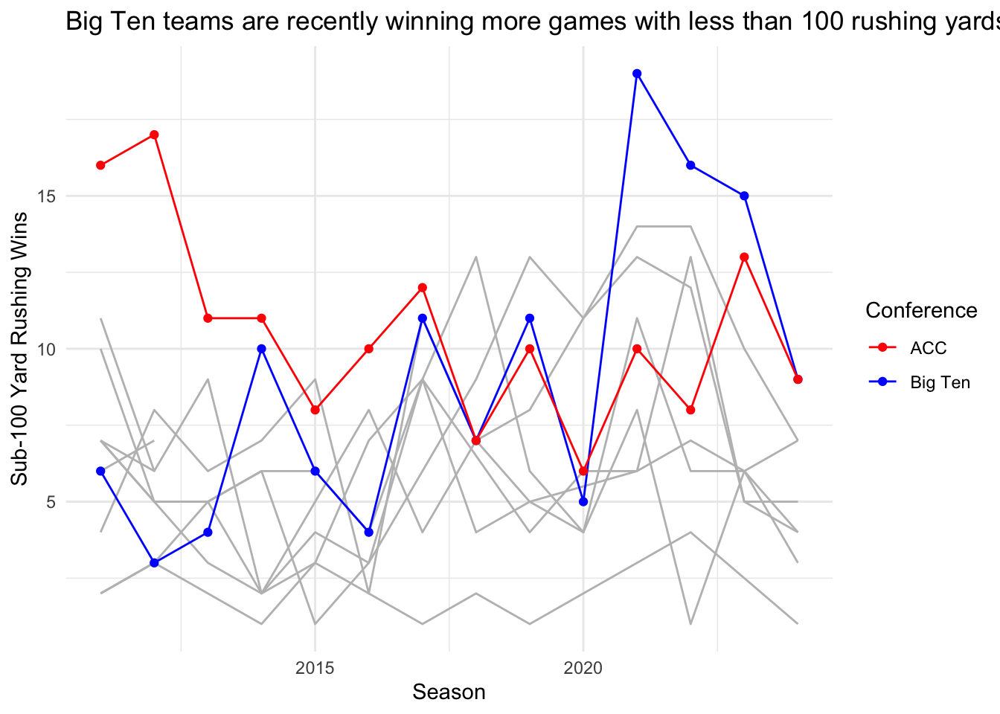

Big Ten Teams Find Recent Success Without Lethal Rushing Attacks
lowercaseword
lowercaseword
lowercaseword
Author
Matthew Neus
Published
October 22, 2024
The ACC used to be dominant in winning games without utilizing he running game. Now, the Big Ten has mastered the art of winning without a strong rushing attack.
Big Ten teams won 19 games in 2021, the most of any conference from 2011 to this season. The conference team’s followed that with 16 wins in 2022 and 15 triumphs in 2023, and are on pace to post a similar number this season by already achieving nine wins when recording less than 100 rushing yards.
Code
library(tidyverse)
── Attaching core tidyverse packages ──────────────────────── tidyverse 2.0.0 ──
✔ dplyr 1.1.4 ✔ readr 2.1.5
✔ forcats 1.0.0 ✔ stringr 1.5.1
✔ ggplot2 3.5.1 ✔ tibble 3.2.1
✔ lubridate 1.9.3 ✔ tidyr 1.3.1
✔ purrr 1.0.2
── Conflicts ────────────────────────────────────────── tidyverse_conflicts() ──
✖ dplyr::filter() masks stats::filter()
✖ dplyr::lag() masks stats::lag()
ℹ Use the conflicted package (<http://conflicted.r-lib.org/>) to force all conflicts to become errors
Rows: 21592 Columns: 55
── Column specification ────────────────────────────────────────────────────────
Delimiter: ","
chr (8): HomeAway, Opponent, Result, TeamFull, TeamURL, Outcome, Team, Con...
dbl (46): Game, PassingCmp, PassingAtt, PassingPct, PassingYds, PassingTD, ...
date (1): Date
ℹ Use `spec()` to retrieve the full column specification for this data.
ℹ Specify the column types or set `show_col_types = FALSE` to quiet this message.
Here I added a log for wins and losses for each team, then I filtered that data to only include games when teams rush less than 100 yards.
By comparing each conference against each other in the amount of wins with less than 100 rushing yards per season since 2011, ACC teams were once great at winning games without needing a rushing attack. Now, the Big Ten is taking over.
Code
data <- (norushwins) |>group_by(Season,Conference) |>summarize(Wins =n())
`summarise()` has grouped output by 'Season'. You can override using the
`.groups` argument.
Code
BigTen <- data |>filter(Conference =="Big Ten Conference")SEC <- data |>filter(Conference =="Southeastern Conference")CUSA <- data |>filter(Conference =="Conference USA")Big12 <- data |>filter(Conference =="Big 12 Conference")Ind <- data |>filter(Conference =="Independent")MAC <- data |>filter(Conference =="Mid-American Conference")PAC12 <- data |>filter(Conference =="Pac-12 Conference", Conference =="Pacific-12 Conference")BigEast <- data |>filter(Conference =="Big East Conference")SunBelt <- data |>filter(Conference =="Sun Belt Conference")MWC <- data |>filter(Conference =="Mountain West Conference")WAC <- data |>filter(Conference =="Western Athletic Conference")ACC <- data |>filter(Conference =="Atlantic Coast Conference")ggplot(data) +geom_line(data = SEC, aes(x = Season, y = Wins), color ="gray") +geom_line(data = CUSA, aes(x = Season, y = Wins), color ="gray") +geom_line(data = Big12, aes(x = Season, y = Wins), color ="gray") +geom_line(data = Ind, aes(x = Season, y = Wins), color ="gray") +geom_line(data = MAC, aes(x = Season, y = Wins), color ="gray") +geom_line(data = PAC12, aes(x = Season, y = Wins), color ="gray") +geom_line(data = BigEast, aes(x = Season, y = Wins), color ="gray") +geom_line(data = SunBelt, aes(x = Season, y = Wins), color ="gray") +geom_line(data = MWC, aes(x = Season, y = Wins), color ="gray") +geom_line(data = WAC, aes(x = Season, y = Wins), color ="gray") +geom_point(data = BigTen, aes(x = Season, y = Wins, color ="Big Ten")) +geom_line(data = BigTen, aes(x = Season, y = Wins, color ="Big Ten")) +geom_point(data = ACC, aes(x = Season, y = Wins, color ="ACC")) +geom_line(data = ACC, aes(x = Season, y = Wins, color ="ACC")) +labs(title ="Big Ten teams are recently winning more games with less than 100 rushing yards",x ="Season",y ="Sub-100 Yard Rushing Wins",color ="Conference") +# Label for the legendscale_color_manual(values =c("Big Ten"="blue", "ACC"="red")) +# Custom colors for Big Ten and ACCtheme_minimal()

The ACC used to find success without a running game from 2011 to 2017. The teams in the conference racked up 85 victories over that span, but only won 63 contests since.
The Big Ten has taken over for the ACC, in large part thanks to Iowa and Purdue. The Boilermakers won a conference best six games without hitting over 100 yards on the ground in 2021, leading to the Big Ten having the most wins in a single season with less than 100 years. Iowa contributed three games that year, and Penn State added four.
But 2021 was a outlier for Purdue, who haven’t won more than two games in a season hitting the rushing lows, and for Penn State, who has won just two games with under 100 rushing yards in 2022 and 2023. But, the Hawkeyes have come out on top in six games during 2022 and 2023, showing they are still one of the premier teams in the Big Ten to win with less than 100 yards rushing.
Code
norushloss <- norush |>filter(wins ==0)
When teams rush for less than 100 yards, they only win 21 percent of the time. In the Big Ten, it only rises slightly to 22 percent. It’s only happened 126 times for Big Ten teams when they win and rush less than 100 yards.
Code
winpct <-nrow(norushwins) /nrow(norush) winpct
[1] 0.212356
Code
b1gwins <- norushwins |>filter(Conference =="Big Ten Conference")b1gtotal <- norush |>filter(Conference =="Big Ten Conference")
Just having a potent passing attack won’t produce many wins for college football teams. Some teams, like Iowa, can have bad running games and still pull out wins, although it doesn’t happen often.
To win in college football, an offense needs to put up yards both on the ground and through the air. Big Ten teams may be better suited to win without running, but teams must mix both rushing and passing to succeed.